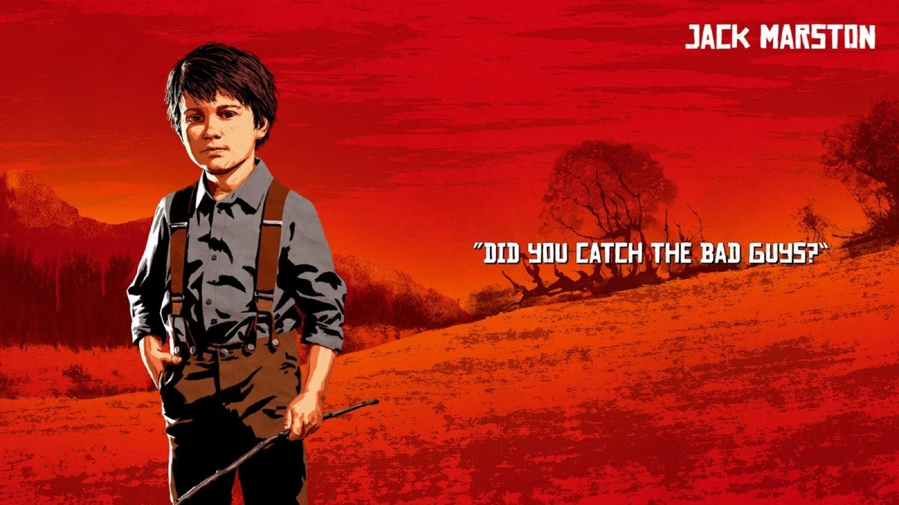
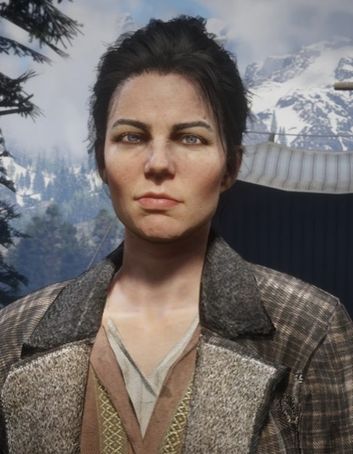
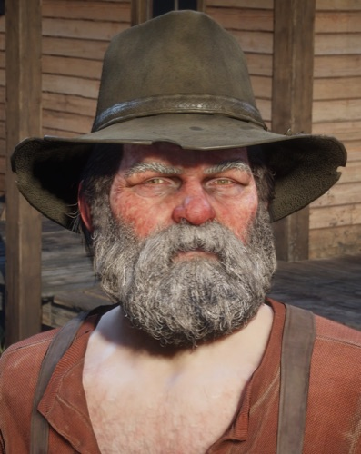

Character · Marston family
Jack Marston
Jack Marston is the son of John Marston and Abigail Marston, born around 1895 and raised inside the Van der Linde gang before his family sought an honest life. Bookish and gentle where his father was hard, Jack is the boy the whole Marston tragedy is meant to protect.
After losing both parents, Jack becomes the final playable character of Red Dead Redemption, and in 1914 closes the saga's long cycle of revenge.
- Born
- 1895
- Status
- Alive (last known)
- Nationality
- American
- Parents
- John Marston, Abigail Marston
- Role
- Final playable character of RDR1
- Games
- Red Dead Redemption, Red Dead Redemption 2
Biography
A child of the gang
Jack grew up among the outlaws of the Van der Linde gang, doted on by the camp and especially close to his mother. Unlike the gunmen around him, he loved reading and dreamed of a quieter life, a sensibility his father John never quite understood but fought to give him.

Revenge, 1914
After his father is killed in 1911 and his mother dies in 1914, a grown Jack takes up the gun he never wanted. He tracks down Edgar Ross, the former agent who destroyed his family, and kills him on a riverbank, ending Red Dead Redemption as its last playable character.
Personality
As a boy, Jack is sensitive, curious and bookish, the gentlest soul in a family of hard people. The tragedy of his arc is watching that gentleness give way to the same violence that defined his father.
Relationships

John Marston
His father, who dies in 1911 trying to give Jack the honest life he never had. Jack later avenges him.

Abigail Marston
His mother and fiercest protector, who dies in 1914. Her death sets Jack on the path of revenge.

Arthur Morgan
A gang elder who helped protect Jack as a boy, part of the family that bought the Marstons their chance at freedom.

Uncle
The old outlaw who lives with the Marstons and is, in his lazy way, a kind of grandfather figure to Jack.

Edgar Ross
The agent who destroyed the Marston family. In 1914, Jack hunts him down and kills him.
Fate and legacy
Jack survives the saga, but at a cost: by avenging his parents he becomes the very thing they died trying to keep him from. His story closes the original Red Dead Redemption and asks whether the cycle of violence can ever truly end.
Behind the scenes
Jack appears as a child in Red Dead Redemption 2 and as the final playable adult protagonist in Red Dead Redemption. Letting players end the original game in his shoes was a bold, melancholy choice that has stayed with fans ever since.
Reception and legacy
Jack divides players: some resent leaving Arthur and John behind for him, others find his grim transformation the perfect, tragic full stop to the saga. Either way, he embodies its central question about violence and inheritance.
Trivia
- Jack is the final playable character of the original Red Dead Redemption.
- He is far more interested in books than in guns as a child.
- He kills Edgar Ross in 1914 to avenge his father.